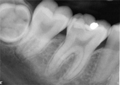
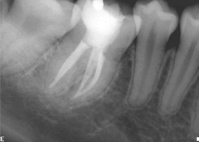
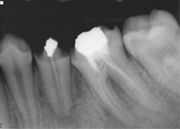
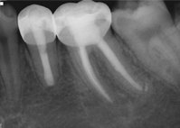
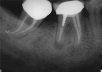
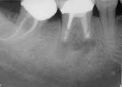
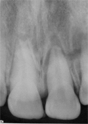
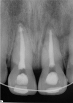
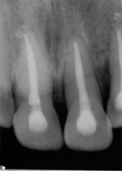

Home / Treatment
Treatment Options
Root canal, or Nonsurgical Endodontic Therapy. This procedure is performed to save a tooth when the inner tissue, called the pulp, becomes damaged. Therapy consists of opening the tooth, removing the pulp, cleaning, shaping, and filling to seal the root canals. Endodontic therapy usually has a 95% success rate.


Endodontic Retreatment. Occasionally a tooth that has undergone endodontic, treatment fails to heal or pain continues despite therapy. Although rare, sometimes a tooth initially responds to root canal therapy but becomes painful or diseased months or years later. When either of these situations occurs, the tooth often can be maintained with a second endodontic treatment.


Endodontic Surgery. Sometimes nonsurgical endodontic therapy and retreatment are ineffective or the root canals may be blocked or calcified. In such cases, the endodontist may then use an in-office surgical procedure called apicoectomy and root end filling to remove the root tip and seal the root canals with a filling in the end of the root.


Traumatic Injuries. Pulp damage is sometimes caused by a blow to the mouth, and the endodontist specializes in treating these traumatic injuries. For example, a blow to a child's permanent tooth that is not fully developed can cause the root to stop growing. A procedure called apexification stimulates bone to be deposited at the end of the root which makes it possible to then save the tooth through a root canal procedure. An endodontist is specially trained in procedures to save teeth that have been knocked out of their sockets.



Diagnoses and Treats Pain. Oral pain such as toothaches or cracked/fractured teeth can often be difficult to pinpoint. Because of the vast network of nerves in the mouth, the pain of a damaged or diseased tooth often is felt in another tooth and/or in the head, neck, or ear. An endodontist is a specialist in diagnosing and treating this type of pain.